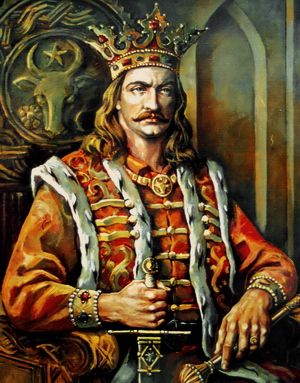

Ștefan cel Mare
Ștefan al III-lea(n. 1438-1439, Borzești – d. 2 iulie 1504, Suceava), supranumit Ștefan cel Mare sau, după canonizarea sa de către Biserica Ortodoxă Română, Ștefan cel Mare și Sfânt, a fost domnul Moldovei între anii 1457 și 1504. A fost fiul lui Bogdan al II-lea, domnind timp de 47 de ani, cea mai lungă domnie din epoca medievală din Țările Române.
Ștefan cel Mare este considerat o personalitate marcantă a istoriei României, înzestrată cu mari calități de om de stat, diplomat și conducător militar. Aceste calități i-au permis să treacă cu bine peste momentele de criză majoră, generate fie de intervențiile militare ale statelor vecine fie de încercări, din interior sau sprijinite din exteriorul țării, de îndepărtare a sa de la domnie. În timpul domniei sale Moldova atinge apogeul dezvoltării sale statale, cunoscând o perioadă îndelungată de stabilitate internă, prosperitate economică și liniște socială.
Pe plan intern și-a bazat regimul pe o nouă clasă conducătoare formată din oameni proveniți preponderent din mica boierime, ridicați la demnități pe baza meritelor militare, loialității față de domn sau a înrudirii apropiate cu acesta. De asemenea a sprijinit foarte mult dezvoltarea răzeșimii prin împroprietăriri colective ale obștilor de răzeși, în special în urma războaielor și bătăliilor purtate, fapt care i-a asigurat loialitatea acestei clase, liniștea socială în țară și forța umană pentru a avea o armată de masă -„oastea cea mare”.
Pe plan extern a reușit să ducă o politică realistă având două mari linii directoare: impunerea sau susținerea unor conducători favorabili în țările vecine mici – Țara Românească și Hanatul Crimeii – și o politică de alianțe care să nu permită nici uneia din marile țări vecine – Imperiul Otoman, Regatul Poloniei și Regatul Ungariei să obțină o poziție hegemonică față de Moldova. A încercat, fără succes, realizarea unui sistem de alianțe internaționale împotriva turcilor, trimițând soli la Papa de la Roma, Veneția, Ungaria, Polonia, Cehia și Persia.
În plan militar a urmărit două direcții majore de acțiune. Prima a fost crearea unui sistem de fortificații permanent la granițele țării - în timpul său construindu-se sau dezvoltându-se rețeaua de cetăți ce cuprindea cetățile de la Suceava, Neamț, Crăciuna, Chilia, Cetatea Albă, Tighina, Orhei, Lăpușna și Hotin. Cea de-a doua direcție majoră a fost crearea unei armate moderne cu o componentă permanentă, profesionistă și semiprofesionistă și o componentă de masă, formată din corpuri de răzeși înarmați, mobilizați în cazul marilor campanii militare.
Pe parcursul domniei a dus peste 40 de războaie sau bătălii, marea lor majoritate victorioase, cele mai semnificative fiind victoria de la Baia asupra lui Matei Corvin în 1467, victoria de la Lipnic împotriva tătarilor, în 1469 sau victoria repurtată în Bătălia de la Codrii Cosminului asupra regelui Poloniei Ioan Albert, în 1497. Cel mai mare succes militar l-a reprezentat victoria zdrobitoare din Bătălia de la Vaslui împotriva unei puternice armate otomane conduse de Soliman-Pașa - beilerbeiul Rumeliei, la 10 ianuarie 1475. În urma pierderii acestei bătălii, În anul următor sultanul Mahomed al II-lea va conduce în persoană o expediție în Moldova încheiată cu înfrângerea armatei Moldovei, în bătălia de la Valea Albă-Războieni.
După 1476, Ștefan a fost nevoit să accepte suzeranitatea Imperiului Otoman, obținând condiții foarte bune pentru Moldova. În schimbul unui tribut anual modic, țara își conserva intacte instituțiile și autonomia politică internă.
Ștefan cel Mare a fost un mare sprijinitor al culturii și al bisericii, ctitorind un număr mare de mănăstiri și biserici atât în Moldova, cât și în Țara Românească, Transilvania sau la Muntele Athos. Pentru aceste merite a fost canonizat de Biserica Ortodoxă Română, cu numele de Ștefan cel Mare și Sfânt, la 20 iunie 1992.
A fost căsătorit de trei ori, cu Evdochia - fiica marelui cneaz de Kiev, Maria din Mangop - din familia imperială bizantină și Maria Voichița - fiica lui Radu cel Frumos, căsătorii în care s-au născut șapte copii. Începând cu 1497 l-a asociat la domnie pe fiul său Bogdan al III-lea, care-i va succede la tron. A murit la 2 iulie 1504 fiind înmormântat la Mănăstirea Putna.
|

|